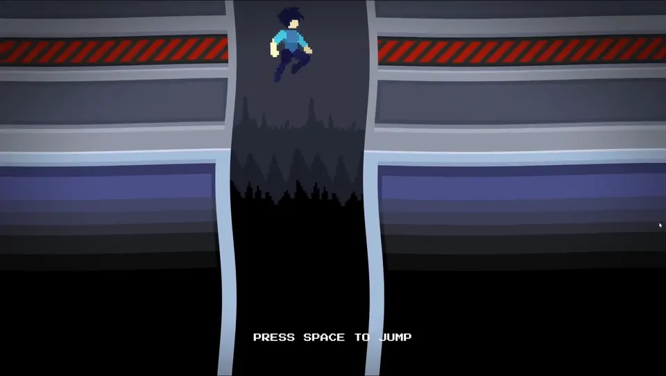

Trapped in a Nightmare
GodotTop-down action game with slash and shoot combat. Fight through an abandoned facility filled with slimes, orcs, and mysterious creatures. Escape the never-ending nightmare.

Top-down action game with slash and shoot combat. Fight through an abandoned facility filled with slimes, orcs, and mysterious creatures. Escape the never-ending nightmare.
Fast-paced top-down survival shooter with neon aesthetics. Drive vehicles, shoot enemies, level up with powerful upgrades, and survive as long as possible in this action-packed game.
Recorded builds from completed and earlier projects.